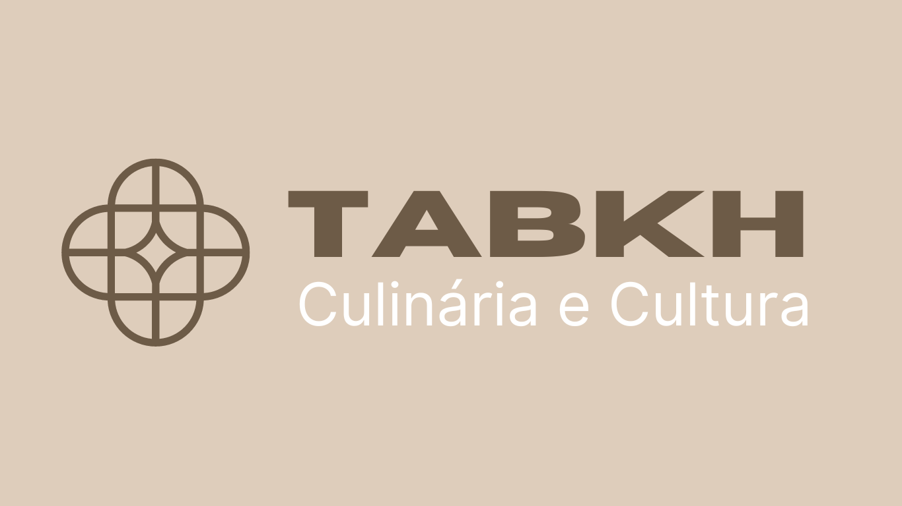

Especiarias do Oriente
As especiarias do Oriente Médio são uma parte essencial da culinária dessa região e são amplamente usadas em todo o mundo. Essas especiarias adicionam sabor e aroma aos pratos e têm benefícios para a saúde. Abaixo estão algumas das especiarias mais populares do Oriente Médio:
- Za'atar: um mix de especiarias que inclui tomilho, orégano, sumagre, sementes de gergelim e sal. É frequentemente usado como um condimento para pães e carnes.
- Canela: é uma especiaria popular usada em muitos pratos doces e salgados, como arroz doce e cordeiro.
- Cominho: um tempero essencial na culinária do Oriente Médio. É usado em pratos como falafel, hummus e kibbeh.
- Açafrão: um tempero caro, mas altamente valorizado na culinária do Oriente Médio. É usado em pratos como biryani e paella.
- Pimenta da Jamaica: uma especiaria com sabor semelhante ao cravo, que é frequentemente usado em marinadas para carnes.
- Cardamomo: um tempero aromático e doce usado em pratos doces e salgados, como arroz com leite e biryani.
- Gengibre: um tempero com sabor forte usado em pratos doces e salgados. É frequentemente usado em chás, sobremesas e marinadas para carnes.
- Coentro: uma erva com sabor fresco e cítrico usada em muitos pratos do Oriente Médio, incluindo tabule e falafel.
- Noz-moscada: um tempero doce usado em muitas sobremesas e pratos salgados, como molhos de queijo e macarrão com queijo.
- Paprika: um tempero de sabor suave e levemente picante usado em muitos pratos do Oriente Médio, como kebabs e molhos.